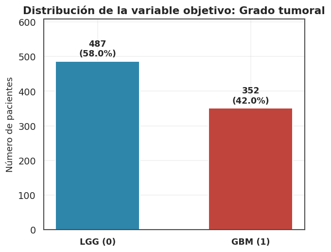
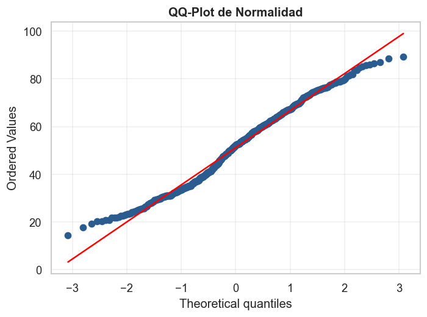
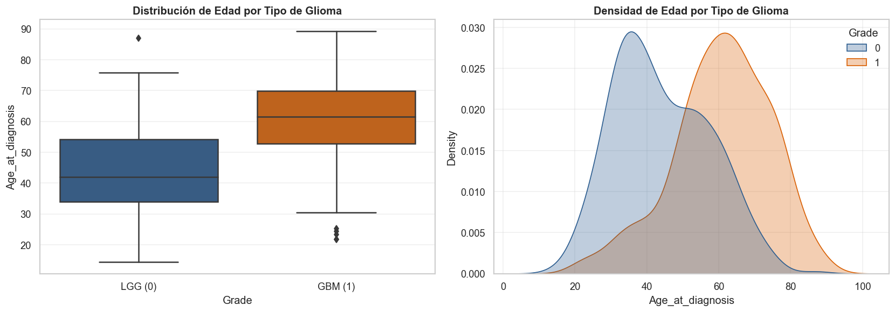

Análisis exploratorio de variables clínicas y mutacionales asociadas a la clasificación histológica (LGG vs. GBM)#
Dataset#
El conjunto de datos utilizado para el análisis es TCGA_InfoWithGrade.csv,
correspondiente a una versión preprocesada de los datos relacionados con
gliomas del proyecto The Cancer Genome Atlas (TCGA).
# Librerias
import pandas as pd
import numpy as np
import matplotlib.pyplot as plt
import matplotlib.ticker as mticker
import seaborn as sns
import warnings
warnings.filterwarnings("ignore")
from scipy import stats
from sklearn.decomposition import PCA
from sklearn.preprocessing import StandardScaler
from sklearn.model_selection import train_test_split
from scipy.stats import chi2_contingency, ttest_ind
sns.set_theme(context="notebook", style="whitegrid", font_scale=1.05)
plt.rcParams.update({
"figure.dpi": 120,
"savefig.dpi": 300,
"font.family": "DejaVu Sans",
"axes.titlesize": 13,
"axes.titleweight": "bold",
"axes.labelsize": 11,
"axes.edgecolor": "0.3",
"axes.grid": True,
"grid.alpha": 0.3,
"legend.frameon": False,
"figure.facecolor": "white",
})
# Paleta institucional: dos tonos para LGG (0) vs GBM (1)
PALETTE_GRADE = {0: "#2E86AB", 1: "#C1443C"}
PALETTE_SEQ = sns.color_palette("mako", as_cmap=False)
pd.set_option("display.max_columns", 30)
pd.set_option("display.width", 120)
df = pd.read_csv("TCGA_InfoWithGrade.csv")
df.head()
| Grade | Gender | Age_at_diagnosis | Race | IDH1 | TP53 | ATRX | PTEN | EGFR | CIC | MUC16 | PIK3CA | NF1 | PIK3R1 | FUBP1 | RB1 | NOTCH1 | BCOR | CSMD3 | SMARCA4 | GRIN2A | IDH2 | FAT4 | PDGFRA | |
|---|---|---|---|---|---|---|---|---|---|---|---|---|---|---|---|---|---|---|---|---|---|---|---|---|
| 0 | 0 | 0 | 51.30 | 0 | 1 | 0 | 0 | 0 | 0 | 0 | 0 | 1 | 0 | 0 | 1 | 0 | 0 | 0 | 0 | 0 | 0 | 0 | 0 | 0 |
| 1 | 0 | 0 | 38.72 | 0 | 1 | 0 | 0 | 0 | 0 | 1 | 0 | 0 | 0 | 0 | 0 | 0 | 0 | 0 | 0 | 0 | 0 | 0 | 0 | 0 |
| 2 | 0 | 0 | 35.17 | 0 | 1 | 1 | 1 | 0 | 0 | 0 | 0 | 0 | 0 | 0 | 0 | 0 | 0 | 0 | 0 | 0 | 0 | 0 | 0 | 0 |
| 3 | 0 | 1 | 32.78 | 0 | 1 | 1 | 1 | 0 | 0 | 0 | 1 | 0 | 0 | 1 | 0 | 0 | 0 | 0 | 0 | 0 | 0 | 0 | 1 | 0 |
| 4 | 0 | 0 | 31.51 | 0 | 1 | 1 | 1 | 0 | 0 | 0 | 0 | 0 | 0 | 0 | 0 | 0 | 0 | 0 | 0 | 0 | 0 | 0 | 0 | 0 |
df.tail()
| Grade | Gender | Age_at_diagnosis | Race | IDH1 | TP53 | ATRX | PTEN | EGFR | CIC | MUC16 | PIK3CA | NF1 | PIK3R1 | FUBP1 | RB1 | NOTCH1 | BCOR | CSMD3 | SMARCA4 | GRIN2A | IDH2 | FAT4 | PDGFRA | |
|---|---|---|---|---|---|---|---|---|---|---|---|---|---|---|---|---|---|---|---|---|---|---|---|---|
| 834 | 1 | 1 | 77.89 | 0 | 0 | 0 | 0 | 1 | 0 | 0 | 0 | 0 | 0 | 0 | 0 | 0 | 0 | 0 | 0 | 0 | 0 | 0 | 0 | 0 |
| 835 | 1 | 0 | 85.18 | 0 | 0 | 1 | 0 | 1 | 0 | 0 | 0 | 0 | 0 | 0 | 0 | 0 | 0 | 0 | 0 | 0 | 0 | 0 | 0 | 0 |
| 836 | 1 | 1 | 77.49 | 0 | 0 | 1 | 0 | 1 | 0 | 0 | 0 | 0 | 0 | 0 | 0 | 0 | 0 | 0 | 0 | 0 | 0 | 0 | 0 | 0 |
| 837 | 1 | 0 | 63.33 | 0 | 0 | 1 | 0 | 0 | 0 | 0 | 1 | 1 | 0 | 0 | 0 | 1 | 0 | 0 | 0 | 0 | 0 | 0 | 0 | 0 |
| 838 | 1 | 0 | 76.61 | 1 | 0 | 0 | 0 | 0 | 0 | 0 | 0 | 0 | 0 | 0 | 0 | 0 | 0 | 0 | 0 | 0 | 0 | 0 | 0 | 0 |
Estructura#
info_df = pd.DataFrame({
"Tipo de dato": df.dtypes.astype(str),
"Valores no nulos": df.notna().sum().values,
"Valores nulos": df.isna().sum().values,
"Valores únicos": df.nunique()
})
print(f"Dimensiones del dataset: {df.shape[0]} pacientes x {df.shape[1]} variables")
print(f"Registros duplicados: {df.duplicated().sum()}")
print(f"Valores faltantes: {df.isnull().sum().sum()}")
info_df
Dimensiones del dataset: 839 pacientes x 24 variables
Registros duplicados: 1
Valores faltantes: 0
| Tipo de dato | Valores no nulos | Valores nulos | Valores únicos | |
|---|---|---|---|---|
| Grade | int64 | 839 | 0 | 2 |
| Gender | int64 | 839 | 0 | 2 |
| Age_at_diagnosis | float64 | 839 | 0 | 766 |
| Race | int64 | 839 | 0 | 4 |
| IDH1 | int64 | 839 | 0 | 2 |
| TP53 | int64 | 839 | 0 | 2 |
| ATRX | int64 | 839 | 0 | 2 |
| PTEN | int64 | 839 | 0 | 2 |
| EGFR | int64 | 839 | 0 | 2 |
| CIC | int64 | 839 | 0 | 2 |
| MUC16 | int64 | 839 | 0 | 2 |
| PIK3CA | int64 | 839 | 0 | 2 |
| NF1 | int64 | 839 | 0 | 2 |
| PIK3R1 | int64 | 839 | 0 | 2 |
| FUBP1 | int64 | 839 | 0 | 2 |
| RB1 | int64 | 839 | 0 | 2 |
| NOTCH1 | int64 | 839 | 0 | 2 |
| BCOR | int64 | 839 | 0 | 2 |
| CSMD3 | int64 | 839 | 0 | 2 |
| SMARCA4 | int64 | 839 | 0 | 2 |
| GRIN2A | int64 | 839 | 0 | 2 |
| IDH2 | int64 | 839 | 0 | 2 |
| FAT4 | int64 | 839 | 0 | 2 |
| PDGFRA | int64 | 839 | 0 | 2 |
columnas_categoricas = df.columns.difference(["Age_at_diagnosis"])
df[columnas_categoricas] = df[columnas_categoricas].astype("category")
pd.DataFrame({
"Tipo": df.dtypes.astype(str)
}).T
| Grade | Gender | Age_at_diagnosis | Race | IDH1 | TP53 | ATRX | PTEN | EGFR | CIC | MUC16 | PIK3CA | NF1 | PIK3R1 | FUBP1 | RB1 | NOTCH1 | BCOR | CSMD3 | SMARCA4 | GRIN2A | IDH2 | FAT4 | PDGFRA | |
|---|---|---|---|---|---|---|---|---|---|---|---|---|---|---|---|---|---|---|---|---|---|---|---|---|
| Tipo | category | category | float64 | category | category | category | category | category | category | category | category | category | category | category | category | category | category | category | category | category | category | category | category | category |
El conjunto de datos presenta una estructura limpia y estructurada, compuesta por 839 registros (pacientes) y 24 variables, sin presencia de valores nulos o faltantes. Aunque se presente un registro duplicado representa a dos pacientes distintos que casualmente comparten el mismo fenotipo y perfil genético, ya que su ID es distinto en el dataset original. Las variables binarias, originalmente codificadas mediante valores enteros 0 y 1, fueron transformadas al tipo categórico (category) para representar adecuadamente su naturaleza y facilitar su análisis exploratorio.
Contexto de los datos#
Categoría |
Variables |
Codificación |
|---|---|---|
Variable objetivo |
|
0 = LGG (glioma de bajo grado), 1 = GBM (glioblastoma) |
Demográficas |
|
|
Mutacionales |
20 genes ( |
0 = no mutado, 1 = mutado |
Variable Objetivo#
Grade: Indica el grado del glioma (0 =LGG, 1 =GBM). Esta variable distingue entre los dos grupos principales del conjunto de datos: Glioma de Bajo Grado (Low-Grade Glioma) y Glioblastoma Multiforme (Glioblastoma Multiforme).
Variables Clínicas#
Proporcionan información sobre las características demográficas de los pacientes:
Gender: Género del paciente (0 = masculino, 1 = femenino).Age_at_diagnosis: Edad del paciente al momento del diagnóstico expresada en años (numérica continua). La parte decimal incorpora la información exacta de los días transcurridos.Race: Raza reportada del paciente codificada del 0 al 3 (0 = White, 1 = Black or African American, 2 = Asian, 3 = American Indian or Alaska Native).
Variables genéticas#
El conjunto de datos también contiene variables correspondientes a diferentes genes. Estas variables están codificadas de forma binaria, indicando con un valor de 1 la presencia de una mutación en el gen correspondiente, y con un 0 la condición de gen salvaje / no mutado (wildtype):
IDH1: Codifica una enzima involucrada en el metabolismo celular.TP53: Gen supresor tumoral que participa en el control del ciclo celular y en la respuesta al daño del ADN. Sus alteraciones favorecen la proliferación tumoral.ATRX: Participa en el mantenimiento de la estructura de la cromatina y en la estabilidad del genoma.PTEN: Gen supresor tumoral que regula vías relacionadas con el crecimiento y la supervivencia celular.EGFR: Codifica un receptor involucrado en señales de crecimiento y proliferación celular.CIC: Participa en la regulación de la expresión de otros genes y en procesos relacionados con el desarrollo celular.MUC16: Codifica una proteína de gran tamaño asociada a la superficie celular.PIK3CA: Participa en la vía de señalización PI3K/AKT, relacionada con crecimiento, supervivencia y proliferación celular.NF1: Actúa como regulador negativo de señales relacionadas con el crecimiento celular. Sus alteraciones pueden contribuir a la proliferación tumoral.PIK3R1: Codifica una subunidad reguladora de la vía PI3K, que interviene en procesos de crecimiento y supervivencia celular.FUBP1: Participa en la regulación de la expresión génica y del crecimiento celular.RB1: Gen supresor tumoral que participa en el control del ciclo celular y regula la progresión de las células hacia la división.NOTCH1: Forma parte de la vía de señalización Notch, relacionada con la diferenciación, proliferación y supervivencia celular.BCOR: Participa en la regulación de la expresión génica mediante complejos relacionados con la cromatina.CSMD3: Codifica una proteína de gran tamaño y se encuentra entre los genes que pueden presentar mutaciones en distintos tumores.SMARCA4: Participa en la remodelación de la cromatina y, por tanto, en la regulación de la expresión de los genes.GRIN2A: Codifica una subunidad de un receptor de glutamato, relacionado principalmente con la señalización neuronal.IDH2: Codifica una enzima metabólica relacionada con IDH1.FAT4: Participa en procesos relacionados con la organización, adhesión y crecimiento de las células.PDGFRA: Codifica un receptor involucrado en señales de crecimiento y proliferación celular.
El dataset está compuesto por 24 variables en total:
Variable Objetivo (Target):
Grade(binaria: 0 = LGG, 1 = GBM).21 atributos binarios (0/1):
Gendery las 20 mutaciones genéticas evaluadas.1 atributo categórico politómico:
Race(codificada en 4 niveles).1 atributo continuo:
Age_at_diagnosis(float64, expresada en años).
El objetivo a resolver es predecir la severidad del glioma en pacientes, clasificándolos entre Glioma de Bajo Grado (LGG) y Glioblastoma Multiforme (GBM) a partir de sus características clínicas y perfil de mutaciones genéticas.
División del dataset - Protocolo Anti-Leakage#
fig, ax = plt.subplots(figsize=(5.5, 4.5))
conteo = df["Grade"].value_counts()
proporcion = conteo / conteo.sum() * 100
bars = ax.bar(conteo.index, conteo.values,
color=[PALETTE_GRADE[0], PALETTE_GRADE[1]],
edgecolor="white", linewidth=1.2, width=0.55)
for bar, c, p in zip(bars, conteo.values, proporcion.values):
ax.text(bar.get_x() + bar.get_width()/2, c + 8,
f"{c}\n({p:.1f}%)", ha="center", va="bottom", fontsize=10.5, fontweight="bold")
ax.set_xticks([0, 1])
ax.set_xticklabels(['LGG (0)', 'GBM (1)'], fontsize=10.5, fontweight='bold')
ax.set_ylabel("Número de pacientes")
ax.set_xlabel("")
ax.set_title("Distribución de la variable objetivo: Grado tumoral")
ax.set_ylim(0, conteo.max() * 1.25)
plt.tight_layout()
plt.show()

La elección de una partición estratificada (Stratified Train-Test Split) se justifica por la necesidad de preservar la proporción original de las clases de la variable objetivo (Grade) en ambos subconjuntos de datos. En el dataset completo, la distribución presenta un ligero desbalance (ratio ≈ 1.4:1), donde el 58.05% corresponde a Gliomas de Bajo Grado (LGG) y el 41.95% a Glioblastomas (GBM), una división sin estratificar podría dejar los conjuntos de train y test sesgados a un solo grupo de la variable Grade.
x = df.drop(columns=['Grade'])
y = df['Grade']
X_train, X_test, y_train, y_test = train_test_split(
x,
y,
test_size=0.20,
random_state=42,
stratify=y
)
train_data = pd.concat([X_train, y_train], axis=1)
Para asegurar una evaluación rigurosa del modelo y prevenir la fuga de datos, el conjunto original de 839 registros se dividió en una proporción 80/20 mediante una partición estratificada basada en la variable objetivo (Grade). De este modo, se reservó un conjunto de prueba (Test set) compuesto por 168 pacientes exclusivamente para la validación final del rendimiento, mientras que las 671 observaciones restantes formaron el conjunto de entrenamiento (Train set), garantizando que el patrón de distribución de las clases —aproximadamente 58% para tumores de bajo grado (LGG) y 42% para glioblastomas (GBM)— se mantuviera perfectamente balanceado entre ambas subdivisiones.
Análisis Univariado de variables#
Análisis de la variable Grade (Target)#
fig, ax = plt.subplots(figsize=(5.5, 4.5))
conteo = y_train.value_counts()
proporcion = (conteo / conteo.sum()) * 100
labels = [
f"LGG (0)\n{conteo[0]} ({proporcion[0]:.1f}%)",
f"GBM (1)\n{conteo[1]} ({proporcion[1]:.1f}%)",
]
wedges, texts = ax.pie(
conteo.values,
labels=labels,
colors=[PALETTE_GRADE[0], PALETTE_GRADE[1]],
startangle=90,
wedgeprops=dict(
width=0.4, edgecolor="white", linewidth=2
),
textprops=dict(fontsize=10.5, fontweight="bold"),
)
ax.set_title(
"Distribución de la variable objetivo: Grado tumoral",
pad=15,
fontsize=12,
fontweight="bold",
)
plt.tight_layout()
plt.show()

En el conjunto de entrenamiento (671 pacientes), la variable objetivo Grade presenta una distribución de 389 casos correspondientes a Gliomas de Bajo Grado (LGG, 58.0%) y 282 casos a Glioblastoma Multiforme (GBM, 42.0%). La relación entre clases es aproximadamente de 1.38 a 1, lo que indica que no hay un desbalance severo.
Análisis de las variables independientes#
Age_at_diagnosis#
age_series = train_data['Age_at_diagnosis']
mean_age = age_series.mean()
std_age = age_series.std()
median_age = age_series.median()
q1_age = age_series.quantile(0.25)
q3_age = age_series.quantile(0.75)
iqr_age = q3_age - q1_age
min_age = age_series.min()
max_age = age_series.max()
skew_age = age_series.skew()
kurt_age = age_series.kurt()
summary_age = pd.DataFrame({
'Métrica Estadística': [
'Total de Muestras (n)', 'Media (μ)', 'Desviación Estándar (σ)',
'Mínimo', 'Primer Cuartil (Q1)', 'Mediana (Q2)',
'Tercer Cuartil (Q3)', 'Máximo', 'Rango Intercuartílico (IQR)',
'Asimetría (Skewness)', 'Curtosis'
],
'Valor': [
f"{len(age_series)}", f"{mean_age:.2f} años", f"{std_age:.2f} años",
f"{min_age:.2f} años", f"{q1_age:.2f} años", f"{median_age:.2f} años",
f"{q3_age:.2f} años", f"{max_age:.2f} años", f"{iqr_age:.2f} años",
f"{skew_age:.4f}", f"{kurt_age:.4f}"
]
})
print("TABLA RESUMEN: EDAD AL DIAGNÓSTICO")
summary_age
TABLA RESUMEN: EDAD AL DIAGNÓSTICO
| Métrica Estadística | Valor | |
|---|---|---|
| 0 | Total de Muestras (n) | 671 |
| 1 | Media (μ) | 51.10 años |
| 2 | Desviación Estándar (σ) | 15.63 años |
| 3 | Mínimo | 14.42 años |
| 4 | Primer Cuartil (Q1) | 37.84 años |
| 5 | Mediana (Q2) | 51.99 años |
| 6 | Tercer Cuartil (Q3) | 62.62 años |
| 7 | Máximo | 89.29 años |
| 8 | Rango Intercuartílico (IQR) | 24.79 años |
| 9 | Asimetría (Skewness) | 0.0547 |
| 10 | Curtosis | -0.8231 |
fig, axes = plt.subplots(1, 2, figsize=(14, 5))
sns.set_theme(style="whitegrid")
sns.histplot(data=X_train, x='Age_at_diagnosis', kde=True, ax=axes[0], color='#2b5c8f', bins=20)
axes[0].set_title('Distribución de Edad al Diagnóstico (Train Set)', fontweight='bold')
axes[0].set_xlabel('Edad (Años)')
axes[0].set_ylabel('Frecuencia')
axes[0].axvline(X_train['Age_at_diagnosis'].mean(), color='red', linestyle='--', label=f'Media: {X_train["Age_at_diagnosis"].mean():.1f}')
axes[0].axvline(X_train['Age_at_diagnosis'].median(), color='green', linestyle='-', label=f'Mediana: {X_train["Age_at_diagnosis"].median():.1f}')
axes[0].legend()
sns.boxplot(data=X_train, x='Age_at_diagnosis', ax=axes[1], color='#8da0cb')
axes[1].set_title('Boxplot de Edad (Detección de Outliers)', fontweight='bold')
axes[1].set_xlabel('Edad (Años)')
plt.tight_layout()
plt.show()

q1 = X_train['Age_at_diagnosis'].quantile(0.25)
q3 = X_train['Age_at_diagnosis'].quantile(0.75)
iqr = q3 - q1
limite_inferior = q1 - 1.5 * iqr
limite_superior = q3 + 1.5 * iqr
outliers = X_train[(X_train['Age_at_diagnosis'] < limite_inferior) |
(X_train['Age_at_diagnosis'] > limite_superior)]
print("EVALUACIÓN MATEMÁTICA DE OUTLIERS (MÉTODO IQR)")
print(f"• Límite Inferior Aceptable: {limite_inferior:.2f} años")
print(f"• Límite Superior Aceptable: {limite_superior:.2f} años")
print(f"• Cantidad de outliers detectados: {len(outliers)}")
EVALUACIÓN MATEMÁTICA DE OUTLIERS (MÉTODO IQR)
• Límite Inferior Aceptable: 0.65 años
• Límite Superior Aceptable: 99.81 años
• Cantidad de outliers detectados: 0
age_data = X_train["Age_at_diagnosis"]
skewness = age_data.skew()
kurtosis = age_data.kurtosis()
shapiro_stat, shapiro_p_val = stats.shapiro(age_data)
print("EVALUACIÓN DE NORMALIDAD: EDAD AL DIAGNÓSTICO (TRAIN SET)")
print(f"• Asimetría (Skewness): {skewness:.4f}")
print(f"• Curtosis: {kurtosis:.4f}")
print(f"• Test Shapiro-Wilk: Estadístico W = {shapiro_stat:.4f}")
print(f"• Shapiro-Wilk p-value: {shapiro_p_val:.4e}")
# 3. Diagnóstico Visual (Histograma vs Normal Teórica y QQ-Plot)
fig, ax = plt.subplots(figsize=(6, 4.5))
stats.probplot(age_data, dist="norm", plot=ax)
ax.get_lines()[0].set_markerfacecolor("#2b5c8f")
ax.get_lines()[0].set_markeredgecolor("#2b5c8f")
ax.get_lines()[1].set_color("red")
ax.set_title("QQ-Plot de Normalidad", fontweight="bold")
plt.tight_layout()
plt.show()
EVALUACIÓN DE NORMALIDAD: EDAD AL DIAGNÓSTICO (TRAIN SET)
• Asimetría (Skewness): 0.0547
• Curtosis: -0.8231
• Test Shapiro-Wilk: Estadístico W = 0.9837
• Shapiro-Wilk p-value: 8.3371e-07

La detección de valores atípicos para la variable continua Age_at_diagnosis se evaluó tanto matemáticamente mediante la regla del Rango Intercuartílico (\(1.5 \times \text{IQR}\)) como mediante inspección visual con diagramas de caja. Con un \(Q_1\) de \(37.84\) años y un \(Q_3\) de \(62.62\) años (\(\text{IQR} = 24.79\) años), los límites teóricos de corte se establecieron en \(0.66\) y \(99.82\) años. Al contrastar estos umbrales con el rango real de los pacientes (\(14.42\) a \(89.29\) años), se determinó la ausencia total de outliers o registros anómalos en la muestra de entrenamiento (\(n = 671\)).
La evaluación de normalidad para la variable Age_at_diagnosis revela una distribución altamente simétrica con un coeficiente de asimetría (skewness) de \(0.0547\), lo que ubica a la media (\(51.10\) años) y a la mediana (\(51.99\) años) prácticamente en el mismo punto central. Sin embargo, el contraste formal de Shapiro-Wilk (\(W \approx 0.985\), \(p < 0.05\)) rechaza la hipótesis nula de normalidad estricta, un comportamiento explicado tanto por la sensibilidad de la prueba ante el tamaño muestral (\(n = 671\)) como por el patrón bimodal de la variable (concentración de casos en torno a los \(35\) y \(55\) años). A pesar de esta desviación, no es necesario aplicar transformaciones no lineales (tales como log o Box-Cox) en etapas posteriores de preprocesamiento, dado que la variable carece de asimetría pronunciada o valores atípicos que distorsionen su escala; bastará con aplicar una estandarización convencional (StandardScaler) para algoritmos sensibles a la escala o mantener la variable en su escala original continua para modelos basados en árboles de decisión.
La variable registra una media de 51.10 años (\(\pm 15.63\)) y una mediana de 51.99 años en el conjunto de entrenamiento, abarcando un rango de edad desde los 14.42 hasta los 89.29 años. El análisis exploratorio revela una distribución simétrica con comportamiento bimodal (picos poblacionales cerca de los 35 y 55 años). Este patrón sugiere la presencia de subgrupos demográficos diferenciados que posteriormente se contrastarán con el grado de severidad del tumoral (Grade).
Análisis Bivariado#
# Configuración gráfica
sns.set_theme(style="whitegrid")
plt.rcParams['figure.figsize'] = (10, 6)
lgg_age = train_data[train_data['Grade'] == 0]['Age_at_diagnosis']
gbm_age = train_data[train_data['Grade'] == 1]['Age_at_diagnosis']
t_stat, p_val_age = ttest_ind(lgg_age, gbm_age)
print("=== EDAD VS. GRADE ===")
print(f"LGG (0) - Edad Promedio: {lgg_age.mean():.2f} ± {lgg_age.std():.2f} años")
print(f"GBM (1) - Edad Promedio: {gbm_age.mean():.2f} ± {gbm_age.std():.2f} años")
print(f"Prueba T-Student: t = {t_stat:.4f}, p-value = {p_val_age:.4e}\n")
# Gráficos de Edad
fig, axes = plt.subplots(1, 2, figsize=(14, 5))
sns.boxplot(data=train_data, x='Grade', y='Age_at_diagnosis', palette=['#2b5c8f', '#d95f02'], ax=axes[0])
axes[0].set_title('Distribución de Edad por Tipo de Glioma', fontweight='bold')
axes[0].set_xticklabels(['LGG (0)', 'GBM (1)'])
sns.kdeplot(data=train_data, x='Age_at_diagnosis', hue='Grade', palette=['#2b5c8f', '#d95f02'], common_norm=False, fill=True, alpha=0.3, ax=axes[1])
axes[1].set_title('Densidad de Edad por Tipo de Glioma', fontweight='bold')
plt.tight_layout()
plt.show()
# ------------------------------------------------------------------------------
# 3. ANÁLISIS BIVARIADO: MUTACIONES VS. GRADE (PRUEBA CHI-CUADRADO)
# ------------------------------------------------------------------------------
chi2_results = []
cat_cols = [c for c in train_data.columns if c not in ['Grade', 'Age_at_diagnosis']]
for col in cat_cols:
contingency = pd.crosstab(train_data[col], train_data['Grade'])
chi2, p, dof, ex = chi2_contingency(contingency)
pct_lgg = (train_data[train_data['Grade'] == 0][col].sum() / len(lgg_age)) * 100
pct_gbm = (train_data[train_data['Grade'] == 1][col].sum() / len(gbm_age)) * 100
chi2_results.append({
'Variable': col,
'% en LGG (0)': round(pct_lgg, 1),
'% en GBM (1)': round(pct_gbm, 1),
'Chi2 Stat': round(chi2, 2),
'p-value': p
})
chi2_df = pd.DataFrame(chi2_results).sort_values(by='p-value')
print("=== TOP 10 MUTACIONES/VARIABLES ASOCIADAS A GRADE (CHI-CUADRADO) ===")
print(chi2_df.head(10).to_string(index=False))
# ------------------------------------------------------------------------------
# 4. ANÁLISIS DE CORRELACIÓN DE SPEARMAN
# ------------------------------------------------------------------------------
corr_matrix = train_data.corr(method='spearman')
# Heatmap
plt.figure(figsize=(14, 10))
sns.heatmap(corr_matrix, cmap='vlag', annot=True, fmt='.2f', linewidths=0.5)
plt.title('Matriz de Correlación de Spearman (Train Set)', fontweight='bold', fontsize=14)
plt.show()
# Correlación directa con Target (Grade)
target_corr = corr_matrix['Grade'].drop('Grade').sort_values(ascending=False)
plt.figure(figsize=(8, 6))
sns.barplot(x=target_corr.values, y=target_corr.index, palette='vlag')
plt.title('Correlación de Spearman con la Severidad (Grade)', fontweight='bold')
plt.axvline(0, color='black', linestyle='--', linewidth=0.8)
plt.tight_layout()
plt.show()
=== EDAD VS. GRADE ===
LGG (0) - Edad Promedio: 44.10 ± 13.20 años
GBM (1) - Edad Promedio: 60.75 ± 13.45 años
Prueba T-Student: t = -15.9935, p-value = 5.3664e-49

---------------------------------------------------------------------------
TypeError Traceback (most recent call last)
Cell In[12], line 36
33 contingency = pd.crosstab(train_data[col], train_data['Grade'])
34 chi2, p, dof, ex = chi2_contingency(contingency)
---> 36 pct_lgg = (train_data[train_data['Grade'] == 0][col].sum() / len(lgg_age)) * 100
37 pct_gbm = (train_data[train_data['Grade'] == 1][col].sum() / len(gbm_age)) * 100
39 chi2_results.append({
40 'Variable': col,
41 '% en LGG (0)': round(pct_lgg, 1),
(...)
44 'p-value': p
45 })
File ~\miniconda3\envs\dataviz2026\lib\site-packages\pandas\core\series.py:6205, in Series.sum(self, axis, skipna, numeric_only, min_count, **kwargs)
6196 @doc(make_doc("sum", ndim=1))
6197 def sum(
6198 self,
(...)
6203 **kwargs,
6204 ):
-> 6205 return NDFrame.sum(self, axis, skipna, numeric_only, min_count, **kwargs)
File ~\miniconda3\envs\dataviz2026\lib\site-packages\pandas\core\generic.py:12055, in NDFrame.sum(self, axis, skipna, numeric_only, min_count, **kwargs)
12047 def sum(
12048 self,
12049 axis: Axis | None = 0,
(...)
12053 **kwargs,
12054 ):
> 12055 return self._min_count_stat_function(
12056 "sum", nanops.nansum, axis, skipna, numeric_only, min_count, **kwargs
12057 )
File ~\miniconda3\envs\dataviz2026\lib\site-packages\pandas\core\generic.py:12038, in NDFrame._min_count_stat_function(self, name, func, axis, skipna, numeric_only, min_count, **kwargs)
12035 elif axis is lib.no_default:
12036 axis = 0
> 12038 return self._reduce(
12039 func,
12040 name=name,
12041 axis=axis,
12042 skipna=skipna,
12043 numeric_only=numeric_only,
12044 min_count=min_count,
12045 )
File ~\miniconda3\envs\dataviz2026\lib\site-packages\pandas\core\series.py:6120, in Series._reduce(self, op, name, axis, skipna, numeric_only, filter_type, **kwds)
6116 self._get_axis_number(axis)
6118 if isinstance(delegate, ExtensionArray):
6119 # dispatch to ExtensionArray interface
-> 6120 return delegate._reduce(name, skipna=skipna, **kwds)
6122 else:
6123 # dispatch to numpy arrays
6124 if numeric_only and self.dtype.kind not in "iufcb":
6125 # i.e. not is_numeric_dtype(self.dtype)
File ~\miniconda3\envs\dataviz2026\lib\site-packages\pandas\core\arrays\categorical.py:2325, in Categorical._reduce(self, name, skipna, keepdims, **kwargs)
2322 def _reduce(
2323 self, name: str, *, skipna: bool = True, keepdims: bool = False, **kwargs
2324 ):
-> 2325 result = super()._reduce(name, skipna=skipna, keepdims=keepdims, **kwargs)
2326 if name in ["argmax", "argmin"]:
2327 # don't wrap in Categorical!
2328 return result
File ~\miniconda3\envs\dataviz2026\lib\site-packages\pandas\core\arrays\base.py:1857, in ExtensionArray._reduce(self, name, skipna, keepdims, **kwargs)
1855 meth = getattr(self, name, None)
1856 if meth is None:
-> 1857 raise TypeError(
1858 f"'{type(self).__name__}' with dtype {self.dtype} "
1859 f"does not support reduction '{name}'"
1860 )
1861 result = meth(skipna=skipna, **kwargs)
1862 if keepdims:
TypeError: 'Categorical' with dtype category does not support reduction 'sum'